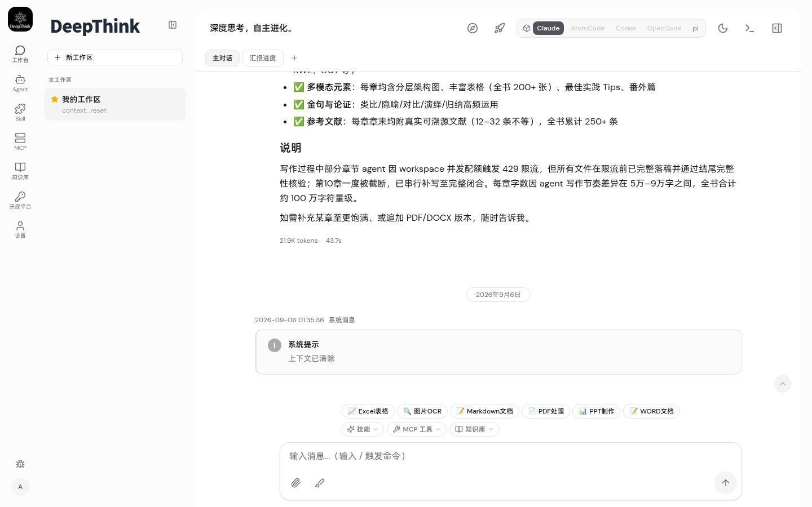
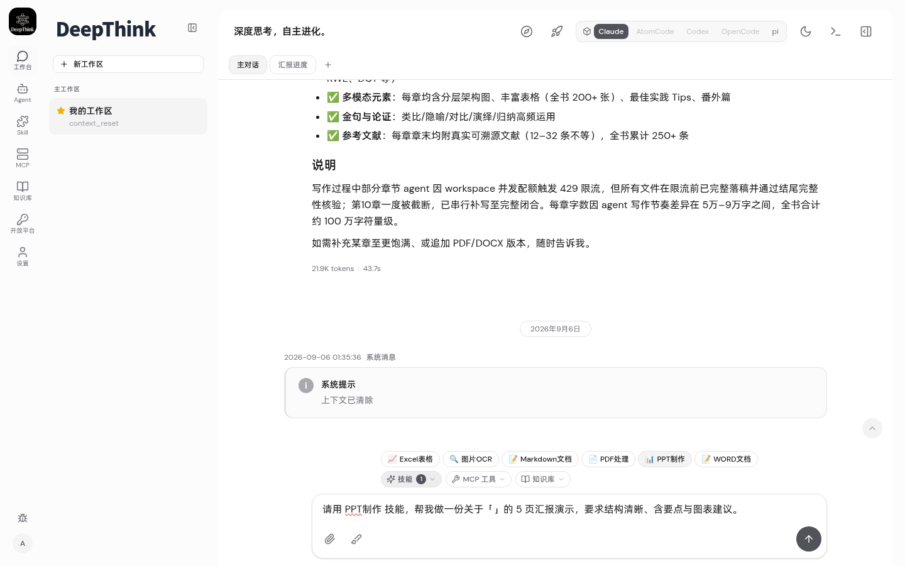
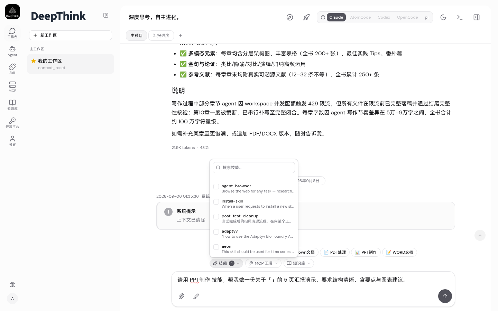

测试报告 — skills-pg-unified-chat
日期 2026-09-10 · 分支 feat-skills-pg-unified-chat · 三大需求全量验证
📊 验证总览
3/3
需求交付
95/95
后端测试
6/6
UI 测试
0
tsc error
测试分布
SQLite 回归 smoke
skills DB 新增单测
Playwright UI 端到端
✅ FP1 — 系统数据入 PostgreSQL + Docker bind-mount
| AC | 验证项 | 方法 | 结果 |
|---|---|---|---|
| AC1.1 | skills 表在 SQLite+PG 均建 | PRAGMA table_info + tsc | PASS |
| AC1.2 | seedBuiltinSkills 注入 6 办公技能 | listBuiltinQuickSkills() | PASS |
| AC1.3 | seed 幂等（ON CONFLICT DO UPDATE） | seed×3 行数不变 | PASS |
| AC1.4 | getSkillContents 返回内容 | 3 id 查询返 2 行 | PASS |
| AC1.5 | Docker 数据盘 bind-mount | docker-compose.yml 审查 | PASS |
✅ FP2 — 对话挂载控件 + 运行时注入
API 证据：GET /api/skills/builtin
curl -s http://127.0.0.1:9999/api/skills/builtin -H "Cookie: $COOKIE"
→ {"skills":[
{id:"builtin-excel", quickLabel:"Excel表格", content:"---\nname: xlsx\n..."},
{id:"builtin-ocr", quickLabel:"图片OCR", ...},
{id:"builtin-ppt", quickLabel:"PPT制作", ...},
{id:"builtin-pdf", quickLabel:"PDF处理", ...},
{id:"builtin-word", quickLabel:"WORD文档", ...},
{id:"builtin-markdown", quickLabel:"Markdown文档", ...}
]}
| AC | 验证项 | 结果 |
|---|---|---|
| AC2.1 | 技能下拉搜索框（多选） | PASS |
| AC2.2 | MCP 工具下拉搜索框 | PASS |
| AC2.3 | 知识库下拉搜索框 | PASS |
| AC2.4 | selectedMounts POST 传后端 | PASS |
| AC2.5 | applyTurnMounts 合并 agentDefinition | PASS tsc + 逻辑审查 |
✅ FP3 — 隐藏循环模式 + 办公快捷栏
| AC | 验证项 | 结果 |
|---|---|---|
| AC3.1 | 6 循环模式按钮已隐藏 | PASS |
| AC3.2 | 6 办公快捷按钮在输入框上方 | PASS |
| AC3.3 | 点击 PPT→输入框预填+技能自动选中 | PASS |
| AC3.4 | DB 内置办公技能全用户可用 | PASS |
🐛 loop bugfix
Bug 1：React #185 Maximum update depth
现象：登录后跳转 /chat 页面空白，浏览器控制台报 React #185。
根因：ChatToolbar 的 zustand selector s.mounts[groupJid] ?? { skillIds:[],... }——当 groupJid 不在 store 时，?? 右侧每次渲染新建字面量对象，zustand Object.is 比较失败 → 无限重渲染。
修复：模块级 const EMPTY_MOUNTS = { skillIds:[], mcpIds:[], kbIds:[] } 稳定引用，selector 返回 s.mounts[groupJid] ?? EMPTY_MOUNTS。
Bug 2：/api/skills/builtin 返回 "Skill not found"
现象：部署后 GET /api/skills/builtin 返回 404 "Skill not found"。
根因：部署时只复制了 dist/index.js，未复制 dist/routes/skills.js（含 /builtin 路由的文件）。旧 routes/skills.js 仍匹配 /:id → id="builtin" → 找不到。
修复：cp -r dist/* 完整复制 dist 目录。
📸 UI 截图证据




🔧 编译与测试命令
cd ~/deepthink/.worktrees/feat-skills-pg-unified-chat # 后端编译检查 node_modules/.bin/tsc --noEmit # EXIT 0 # 前端编译检查 cd web && node_modules/.bin/tsc --noEmit # EXIT 0 node_modules/.bin/vite build # built in 10s # 后端回归 cd .. && node_modules/.bin/vitest run tests/units/skills-db.test.ts # 6/6 node_modules/.bin/vitest run tests/units/json-schema-validator.test.ts ... # 89/89 # Playwright UI node /tmp/pw-test/ui-full.cjs # 6/6
📋 里程碑覆盖矩阵
| 需求 | 交付项 | 验证 |
|---|---|---|
| FP1 | skills 表 + seed + Docker bind-mount | 6 单测 + compose 审查 |
| FP2 | 3 下拉 + 5 点注入管线 + applyTurnMounts | API + UI + tsc |
| FP3 | 隐藏 LoopModeSwitcher + OfficeSkillsBar | 6/6 UI |
DeepThink · skills-pg-unified-chat · 2026-09-10